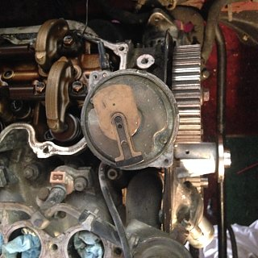

-
When my car is at TDC which is the 0 degree on the crank pulleys it is either on TDC of cylinder 6 or 1(this is what i got out of the haynes manual). The Haynes manual says you can find that out my looking at the distributor when its pointing toward spark plug wire #1. When ever my car is a TDC or cylinder #1 the distributor should be pointing at the #1 spark plug wire. the only thing is that i don't think mine points directly to the #1 wire. Here is a picture. All of my timing marks on the cams and crank are lined up in the picture. Not sure how to fix this or if its even a problem. All this TDC for cylinder 1 is confusing me now. I'm a newb at replacing timing belts so sorry if this is a stupid question.
 -
I don't have anything in front of me..... but the Z31 style distributor cap is oddly designed so, it can look confusing. If you look at the distributor cap and find the one labeled for the #1 cylinder (if Nissan cap)/ the one that is supposed to run to the #1 cyl. Then look at that plug on the cap and trace it to the contact point on the underside of the cap. Your rotor should be pointing to this contact point. The #1 cyl contact point.Shiro #93
Mods: A/C Removal, Custom Lightweight W-series crank pulley, K&N Air Filter, Electric Fan, EGR/AIV/CC removal -
Did you relieve the rocker arms as i previously recommended or are you just looking to be walked through this? you will not be able to set the camshafts on time without doing that.
That looks close, but likely that the distributor is at full left-or-right of it's adjustment, so you may want to ensure your distributor timing marks are aligned.
Really, ditch the Haynes. Use the FSM,
References
EM- 9 for pulley timing marks
EM-11 for belt install
EM-27 for the distributor install/timing
http://www.nicoclub.com/service-manu…=300zx/1988/EM
just follow the book, double check your work and you'll be fineLast edited by 88sinZ; 08-07-2016, 10:32 PM. -
Should be pointing at the contact point for #1 on the cap like tcfs said. Look under the cap to see exactly where the contact point is. Usually it'll result in the rotor being pointed at the Fuel Pressure Regulator. -
Is not going to be directly on the number 1cylinder,from the look at the picture it looks fine.i had that same question many many years ago.like z-whipped note,is going to be facing the fuel pressure regulator. -
Did any one notice that the rotor is not even on the shaft -
Your on drugs man, its piece of piss without loosening rockers…Originally posted by 88sinZ View Post
Anyways, I think previous owner should put the tools down and get someone who has an idea to help out. I'm not meaning to be a cunt but if you are having trouble finding TDC compression on cylinder 1 then there's no hope of setting the timing belt up properly.
CheersStraya, +61

Copyright © 2006–. All rights reserved. Privacy Policy